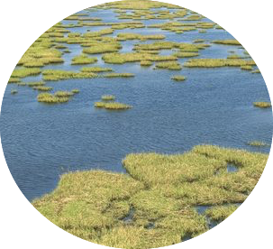
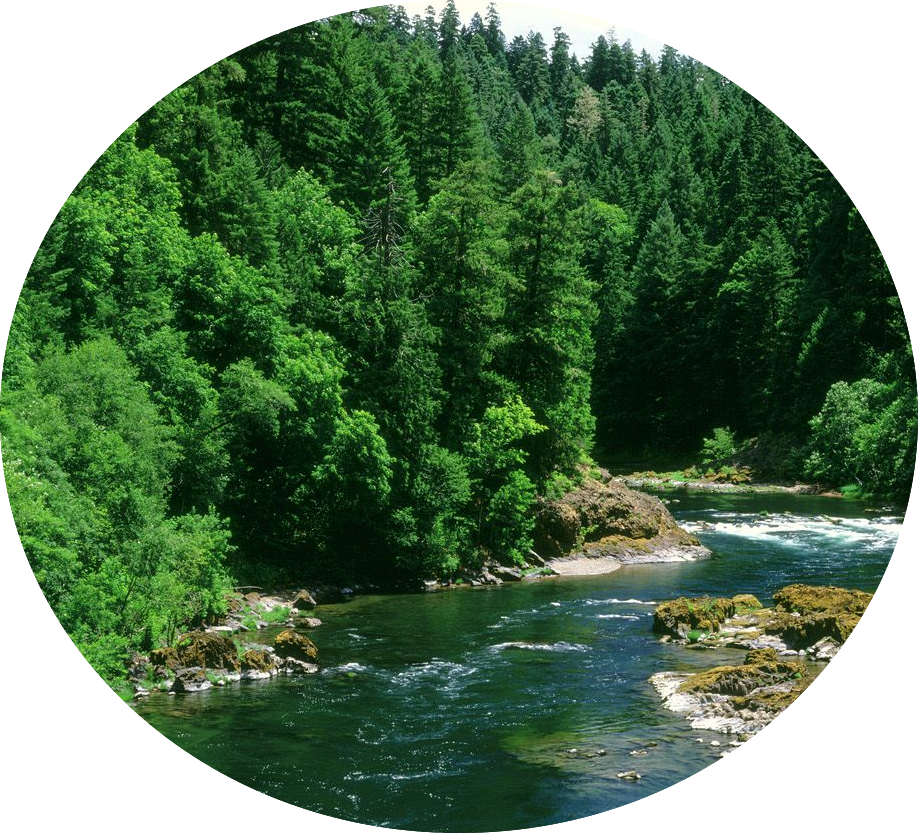
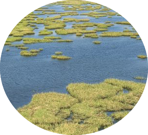
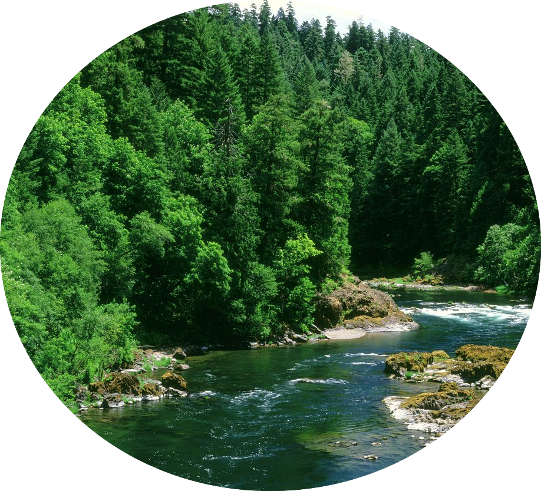

Freshwater
 



Lakes
Lakes are a body of water surrounded by land, each varying in size. Light and wind affect the temperature in lakes, sunlight makes it warmer wind makes it cool down. The changing temperatures are really affecting the fishes, with the earlier snowmelt, rising amounts of percipitation more frequent floods. They affect the temperature, reproduction, creates a ton of dead zones, and creates a displacement of cold-water species
Ponds
A pond is a small area of still, fresh water. It's different from lakes and rivers because the water is still. With the droughts and all the temperature changes ponds could dry out faster. Which< impacts the reproductive cycles of numerous amphibian species.
Inland Wetlands
Inland Wetlands are most common on floodplains along rivers and streams surrounded by dry land. There are marshes and wet meadows dominated by herbaceous plants, swamps dominated by shrubs. Inland wetlands can be vulnerable to the impacts of climate. They also play an important role through capturing and storing carbon to reduce greenhouse gas emissions.
Rivers
Rivers come from many different sources. They can start from lakes or springs and from rain or melting snow. With the rising temps rivers are starting to dry out. It affects the water quality, wetland plants and animals, and biodiversity loss.